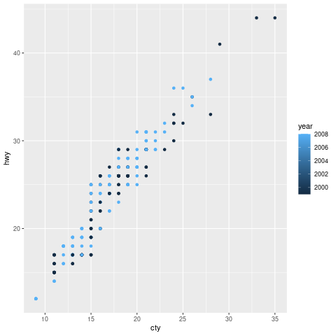

5 Code examples from study session 2024-02-25
| This is part of the Scicloj Clojure Data Scrapbook. |
(ns study-session-20240225
(:require [clojisr.v1.r :as r :refer [r]]
[clojisr.v1.applications.plotting :as plotting]
[scicloj.kindly.v4.kind :as kind]
[tablecloth.api :as tc]
[scicloj.metamorph.ml.toydata :as toydata]
[scicloj.metamorph.ml.toydata.ggplot :as toydata.ggplot]
[representing]))Add ggplot2 to the R runtime:
(r/library "ggplot2")[1] "ggplot2" "Rserve" "stats" "graphics" "grDevices" "utils"
[7] "datasets" "methods" "base"
The mpg dataset:
(r "mpg")# A tibble: 234 × 11
manufacturer model displ year cyl trans drv cty hwy fl class
<chr> <chr> <dbl> <int> <int> <chr> <chr> <int> <int> <chr> <chr>
1 audi a4 1.8 1999 4 auto… f 18 29 p comp…
2 audi a4 1.8 1999 4 manu… f 21 29 p comp…
3 audi a4 2 2008 4 manu… f 20 31 p comp…
4 audi a4 2 2008 4 auto… f 21 30 p comp…
5 audi a4 2.8 1999 6 auto… f 16 26 p comp…
6 audi a4 2.8 1999 6 manu… f 18 26 p comp…
7 audi a4 3.1 2008 6 auto… f 18 27 p comp…
8 audi a4 quattro 1.8 1999 4 manu… 4 18 26 p comp…
9 audi a4 quattro 1.8 1999 4 auto… 4 16 25 p comp…
10 audi a4 quattro 2 2008 4 manu… 4 20 28 p comp…
# ℹ 224 more rows
Evaluating R and showing a plot as a bitmap image:
(plotting/plot->buffered-image
(r "
(ggplot(mpg, aes(x = cty, y = hwy, color = year)) +
geom_point())
"))

Showing a plot as svg:
(plotting/plot->svg
(r "
(ggplot(mpg, aes(x = cty, y = hwy, color = year)) +
geom_point())
"))"<?xml version='1.0' encoding='UTF-8' ?>\n<svg xmlns='http://www.w3.org/2000/svg' xmlns:xlink='http://www.w3.org/1999/xlink' class='svglite' width='720.00pt' height='576.00pt' viewBox='0 0 720.00 576.00'>\n<defs>\n <style type='text/css'><![CDATA[\n .svglite line, .svglite polyline, .svglite polygon, .svglite path, .svglite rect, .svglite circle {\n fill: none;\n stroke: #000000;\n stroke-linecap: round;\n stroke-linejoin: round;\n stroke-miterlimit: 10.00;\n }\n .svglite text {\n white-space: pre;\n }\n ]]></style>\n</defs>\n<rect width='100%' height='100%' style='stroke: none; fill: #FFFFFF;'/>\n<defs>\n <clipPath id='cpMC4wMHw3MjAuMDB8MC4wMHw1NzYuMDA='>\n <rect x='0.00' y='0.00' width='720.00' height='576.00' />\n </clipPath>\n</defs>\n<g clip-path='url(#cpMC4wMHw3MjAuMDB8MC4wMHw1NzYuMDA=)'>\n<rect x='0.00' y='0.00' width='720.00' height='576.00' style='stroke-width: 1.07; stroke: #FFFFFF; fill: #FFFFFF;' />\n</g>\n<defs>\n <clipPath id='cpMzQuNjV8NjQ3LjQ3fDUuNDh8NTQ0LjI5'>\n <rect x='34.65' y='5.48' width='612.82' height='538.82' />\n </clipPath>\n</defs>\n<g clip-path='url(#cpMzQuNjV8NjQ3LjQ3fDUuNDh8NTQ0LjI5)'>\n<rect x='34.65' y='5.48' width='612.82' height='538.82' style='stroke-width: 1.07; stroke: none; fill: #EBEBEB;' />\n<polyline points='34.65,473.88 647.47,473.88 ' style='stroke-width: 0.53; stroke: #FFFFFF; stroke-linecap: butt;' />\n<polyline points='34.65,320.81 647.47,320.81 ' style='stroke-width: 0.53; stroke: #FFFFFF; stroke-linecap: butt;' />\n<polyline points='34.65,167.74 647.47,167.74 ' style='stroke-width: 0.53; stroke: #FFFFFF; stroke-linecap: butt;' />\n<polyline points='34.65,14.66 647.47,14.66 ' style='stroke-width: 0.53; stroke: #FFFFFF; stroke-linecap: butt;' />\n<polyline points='137.50,544.29 137.50,5.48 ' style='stroke-width: 0.53; stroke: #FFFFFF; stroke-linecap: butt;' />\n<polyline points='244.64,544.29 244.64,5.48 ' style='stroke-width: 0.53; stroke: #FFFFFF; stroke-linecap: butt;' />\n<polyline points='351.77,544.29 351.77,5.48 ' style='stroke-width: 0.53; stroke: #FFFFFF; stroke-linecap: butt;' />\n<polyline points='458.91,544.29 458.91,5.48 ' style='stroke-width: 0.53; stroke: #FFFFFF; stroke-linecap: butt;' />\n<polyline points='566.04,544.29 566.04,5.48 ' style='stroke-width: 0.53; stroke: #FFFFFF; stroke-linecap: butt;' />\n<polyline points='34.65,397.35 647.47,397.35 ' style='stroke-width: 1.07; stroke: #FFFFFF; stroke-linecap: butt;' />\n<polyline points='34.65,244.27 647.47,244.27 ' style='stroke-width: 1.07; stroke: #FFFFFF; stroke-linecap: butt;' />\n<polyline points='34.65,91.20 647.47,91.20 ' style='stroke-width: 1.07; stroke: #FFFFFF; stroke-linecap: butt;' />\n<polyline points='83.93,544.29 83.93,5.48 ' style='stroke-width: 1.07; stroke: #FFFFFF; stroke-linecap: butt;' />\n<polyline points='191.07,544.29 191.07,5.48 ' style='stroke-width: 1.07; stroke: #FFFFFF; stroke-linecap: butt;' />\n<polyline points='298.20,544.29 298.20,5.48 ' style='stroke-width: 1.07; stroke: #FFFFFF; stroke-linecap: butt;' />\n<polyline points='405.34,544.29 405.34,5.48 ' style='stroke-width: 1.07; stroke: #FFFFFF; stroke-linecap: butt;' />\n<polyline points='512.47,544.29 512.47,5.48 ' style='stroke-width: 1.07; stroke: #FFFFFF; stroke-linecap: butt;' />\n<polyline points='619.61,544.29 619.61,5.48 ' style='stroke-width: 1.07; stroke: #FFFFFF; stroke-linecap: butt;' />\n<circle cx='255.35' cy='259.58' r='1.95' style='stroke-width: 0.71; stroke: #132B43; fill: #132B43;' />\n<circle cx='319.63' cy='259.58' r='1.95' style='stroke-width: 0.71; stroke: #132B43; fill: #132B43;' />\n<circle cx='298.20' cy='228.97' r='1.95' style='stroke-width: 0.71; stroke: #56B1F7; fill: #56B1F7;' />\n<circle cx='319.63' cy='244.27' r='1.95' style='stroke-width: 0.71; stroke: #56B1F7; fill: #56B1F7;' />\n<circle cx='212.50' cy='305.50' r='1.95' style='stroke-width: 0.71; stroke: #132B43; fill: #132B43;' />\n<circle cx='255.35' cy='305.50' r='1.95' style='stroke-width: 0.71; stroke: #132B43; fill: #132B43;' />\n<circle cx='255.35' cy='290.19' r='1.95' style='stroke-width: 0.71; stroke: #56B1F7; fill: #56B1F7;' />\n<circle cx='255.35' cy='305.50' r='1.95' style='stroke-width: 0.71; stroke: #132B43; fill: #132B43;' />\n<circle cx='212.50' cy='320.81' r='1.95' style='stroke-width: 0.71; stroke: #132B43; fill: #132B43;' />\n<circle cx='298.20' cy='274.89' r='1.95' style='stroke-width: 0.71; stroke: #56B1F7; fill: #56B1F7;' />\n<circle cx='276.78' cy='290.19' r='1.95' style='stroke-width: 0.71; stroke: #56B1F7; fill: #56B1F7;' />\n<circle cx='191.07' cy='320.81' r='1.95' style='stroke-width: 0.71; stroke: #132B43; fill: #132B43;' />\n<circle cx='233.92' cy='320.81' r='1.95' style='stroke-width: 0.71; stroke: #132B43; fill: #132B43;' />\n<circle cx='233.92' cy='320.81' r='1.95' style='stroke-width: 0.71; stroke: #56B1F7; fill: #56B1F7;' />\n<circle cx='191.07' cy='320.81' r='1.95' style='stroke-width: 0.71; stroke: #56B1F7; fill: #56B1F7;' />\n<circle cx='191.07' cy='336.12' r='1.95' style='stroke-width: 0.71; stroke: #132B43; fill: #132B43;' />\n<circle cx='233.92' cy='320.81' r='1.95' style='stroke-width: 0.71; stroke: #56B1F7; fill: #56B1F7;' />\n<circle cx='212.50' cy='351.42' r='1.95' style='stroke-width: 0.71; stroke: #56B1F7; fill: #56B1F7;' />\n<circle cx='169.64' cy='397.35' r='1.95' style='stroke-width: 0.71; stroke: #56B1F7; fill: #56B1F7;' />\n<circle cx='105.36' cy='473.88' r='1.95' style='stroke-width: 0.71; stroke: #56B1F7; fill: #56B1F7;' />\n<circle cx='169.64' cy='397.35' r='1.95' style='stroke-width: 0.71; stroke: #56B1F7; fill: #56B1F7;' />\n<circle cx='148.21' cy='443.27' r='1.95' style='stroke-width: 0.71; stroke: #132B43; fill: #132B43;' />\n<circle cx='126.79' cy='443.27' r='1.95' style='stroke-width: 0.71; stroke: #56B1F7; fill: #56B1F7;' />\n<circle cx='212.50' cy='305.50' r='1.95' style='stroke-width: 0.71; stroke: #132B43; fill: #132B43;' />\n<circle cx='191.07' cy='351.42' r='1.95' style='stroke-width: 0.71; stroke: #132B43; fill: #132B43;' />\n<circle cx='212.50' cy='305.50' r='1.95' style='stroke-width: 0.71; stroke: #56B1F7; fill: #56B1F7;' />\n<circle cx='191.07' cy='320.81' r='1.95' style='stroke-width: 0.71; stroke: #56B1F7; fill: #56B1F7;' />\n<circle cx='191.07' cy='336.12' r='1.95' style='stroke-width: 0.71; stroke: #56B1F7; fill: #56B1F7;' />\n<circle cx='169.64' cy='412.65' r='1.95' style='stroke-width: 0.71; stroke: #56B1F7; fill: #56B1F7;' />\n<circle cx='105.36' cy='489.19' r='1.95' style='stroke-width: 0.71; stroke: #56B1F7; fill: #56B1F7;' />\n<circle cx='105.36' cy='473.88' r='1.95' style='stroke-width: 0.71; stroke: #132B43; fill: #132B43;' />\n<circle cx='169.64' cy='443.27' r='1.95' style='stroke-width: 0.71; stroke: #132B43; fill: #132B43;' />\n<circle cx='276.78' cy='290.19' r='1.95' style='stroke-width: 0.71; stroke: #132B43; fill: #132B43;' />\n<circle cx='341.06' cy='244.27' r='1.95' style='stroke-width: 0.71; stroke: #56B1F7; fill: #56B1F7;' />\n<circle cx='255.35' cy='305.50' r='1.95' style='stroke-width: 0.71; stroke: #132B43; fill: #132B43;' />\n<circle cx='255.35' cy='259.58' r='1.95' style='stroke-width: 0.71; stroke: #56B1F7; fill: #56B1F7;' />\n<circle cx='233.92' cy='305.50' r='1.95' style='stroke-width: 0.71; stroke: #56B1F7; fill: #56B1F7;' />\n<circle cx='255.35' cy='336.12' r='1.95' style='stroke-width: 0.71; stroke: #132B43; fill: #132B43;' />\n<circle cx='233.92' cy='336.12' r='1.95' style='stroke-width: 0.71; stroke: #132B43; fill: #132B43;' />\n<circle cx='212.50' cy='366.73' r='1.95' style='stroke-width: 0.71; stroke: #132B43; fill: #132B43;' />\n<circle cx='212.50' cy='366.73' r='1.95' style='stroke-width: 0.71; stroke: #132B43; fill: #132B43;' />\n<circle cx='233.92' cy='336.12' r='1.95' style='stroke-width: 0.71; stroke: #56B1F7; fill: #56B1F7;' />\n<circle cx='233.92' cy='336.12' r='1.95' style='stroke-width: 0.71; stroke: #56B1F7; fill: #56B1F7;' />\n<circle cx='105.36' cy='443.27' r='1.95' style='stroke-width: 0.71; stroke: #56B1F7; fill: #56B1F7;' />\n<circle cx='191.07' cy='366.73' r='1.95' style='stroke-width: 0.71; stroke: #132B43; fill: #132B43;' />\n<circle cx='191.07' cy='382.04' r='1.95' style='stroke-width: 0.71; stroke: #132B43; fill: #132B43;' />\n<circle cx='212.50' cy='351.42' r='1.95' style='stroke-width: 0.71; stroke: #56B1F7; fill: #56B1F7;' />\n<circle cx='212.50' cy='351.42' r='1.95' style='stroke-width: 0.71; stroke: #56B1F7; fill: #56B1F7;' />\n<circle cx='191.07' cy='412.65' r='1.95' style='stroke-width: 0.71; stroke: #56B1F7; fill: #56B1F7;' />\n<circle cx='169.64' cy='427.96' r='1.95' style='stroke-width: 0.71; stroke: #56B1F7; fill: #56B1F7;' />\n<circle cx='148.21' cy='443.27' r='1.95' style='stroke-width: 0.71; stroke: #132B43; fill: #132B43;' />\n<circle cx='169.64' cy='443.27' r='1.95' style='stroke-width: 0.71; stroke: #132B43; fill: #132B43;' />\n<circle cx='169.64' cy='412.65' r='1.95' style='stroke-width: 0.71; stroke: #56B1F7; fill: #56B1F7;' />\n<circle cx='169.64' cy='412.65' r='1.95' style='stroke-width: 0.71; stroke: #56B1F7; fill: #56B1F7;' />\n<circle cx='62.51' cy='519.80' r='1.95' style='stroke-width: 0.71; stroke: #56B1F7; fill: #56B1F7;' />\n<circle cx='105.36' cy='443.27' r='1.95' style='stroke-width: 0.71; stroke: #132B43; fill: #132B43;' />\n<circle cx='105.36' cy='473.88' r='1.95' style='stroke-width: 0.71; stroke: #132B43; fill: #132B43;' />\n<circle cx='148.21' cy='443.27' r='1.95' style='stroke-width: 0.71; stroke: #132B43; fill: #132B43;' />\n<circle cx='148.21' cy='443.27' r='1.95' style='stroke-width: 0.71; stroke: #56B1F7; fill: #56B1F7;' />\n<circle cx='62.51' cy='519.80' r='1.95' style='stroke-width: 0.71; stroke: #56B1F7; fill: #56B1F7;' />\n<circle cx='148.21' cy='443.27' r='1.95' style='stroke-width: 0.71; stroke: #56B1F7; fill: #56B1F7;' />\n<circle cx='105.36' cy='458.57' r='1.95' style='stroke-width: 0.71; stroke: #132B43; fill: #132B43;' />\n<circle cx='148.21' cy='427.96' r='1.95' style='stroke-width: 0.71; stroke: #56B1F7; fill: #56B1F7;' />\n<circle cx='105.36' cy='473.88' r='1.95' style='stroke-width: 0.71; stroke: #132B43; fill: #132B43;' />\n<circle cx='126.79' cy='458.57' r='1.95' style='stroke-width: 0.71; stroke: #56B1F7; fill: #56B1F7;' />\n<circle cx='62.51' cy='519.80' r='1.95' style='stroke-width: 0.71; stroke: #56B1F7; fill: #56B1F7;' />\n<circle cx='148.21' cy='443.27' r='1.95' style='stroke-width: 0.71; stroke: #56B1F7; fill: #56B1F7;' />\n<circle cx='148.21' cy='443.27' r='1.95' style='stroke-width: 0.71; stroke: #56B1F7; fill: #56B1F7;' />\n<circle cx='126.79' cy='458.57' r='1.95' style='stroke-width: 0.71; stroke: #56B1F7; fill: #56B1F7;' />\n<circle cx='62.51' cy='519.80' r='1.95' style='stroke-width: 0.71; stroke: #56B1F7; fill: #56B1F7;' />\n<circle cx='105.36' cy='473.88' r='1.95' style='stroke-width: 0.71; stroke: #132B43; fill: #132B43;' />\n<circle cx='105.36' cy='458.57' r='1.95' style='stroke-width: 0.71; stroke: #132B43; fill: #132B43;' />\n<circle cx='148.21' cy='443.27' r='1.95' style='stroke-width: 0.71; stroke: #56B1F7; fill: #56B1F7;' />\n<circle cx='105.36' cy='473.88' r='1.95' style='stroke-width: 0.71; stroke: #132B43; fill: #132B43;' />\n<circle cx='105.36' cy='443.27' r='1.95' style='stroke-width: 0.71; stroke: #132B43; fill: #132B43;' />\n<circle cx='105.36' cy='443.27' r='1.95' style='stroke-width: 0.71; stroke: #132B43; fill: #132B43;' />\n<circle cx='126.79' cy='427.96' r='1.95' style='stroke-width: 0.71; stroke: #56B1F7; fill: #56B1F7;' />\n<circle cx='169.64' cy='443.27' r='1.95' style='stroke-width: 0.71; stroke: #132B43; fill: #132B43;' />\n<circle cx='191.07' cy='412.65' r='1.95' style='stroke-width: 0.71; stroke: #132B43; fill: #132B43;' />\n<circle cx='169.64' cy='443.27' r='1.95' style='stroke-width: 0.71; stroke: #132B43; fill: #132B43;' />\n<circle cx='148.21' cy='412.65' r='1.95' style='stroke-width: 0.71; stroke: #56B1F7; fill: #56B1F7;' />\n<circle cx='148.21' cy='412.65' r='1.95' style='stroke-width: 0.71; stroke: #56B1F7; fill: #56B1F7;' />\n<circle cx='148.21' cy='443.27' r='1.95' style='stroke-width: 0.71; stroke: #132B43; fill: #132B43;' />\n<circle cx='169.64' cy='443.27' r='1.95' style='stroke-width: 0.71; stroke: #132B43; fill: #132B43;' />\n<circle cx='169.64' cy='443.27' r='1.95' style='stroke-width: 0.71; stroke: #132B43; fill: #132B43;' />\n<circle cx='148.21' cy='458.57' r='1.95' style='stroke-width: 0.71; stroke: #132B43; fill: #132B43;' />\n<circle cx='148.21' cy='458.57' r='1.95' style='stroke-width: 0.71; stroke: #132B43; fill: #132B43;' />\n<circle cx='148.21' cy='443.27' r='1.95' style='stroke-width: 0.71; stroke: #56B1F7; fill: #56B1F7;' />\n<circle cx='105.36' cy='473.88' r='1.95' style='stroke-width: 0.71; stroke: #132B43; fill: #132B43;' />\n<circle cx='148.21' cy='443.27' r='1.95' style='stroke-width: 0.71; stroke: #56B1F7; fill: #56B1F7;' />\n<circle cx='255.35' cy='305.50' r='1.95' style='stroke-width: 0.71; stroke: #132B43; fill: #132B43;' />\n<circle cx='255.35' cy='320.81' r='1.95' style='stroke-width: 0.71; stroke: #132B43; fill: #132B43;' />\n<circle cx='233.92' cy='305.50' r='1.95' style='stroke-width: 0.71; stroke: #56B1F7; fill: #56B1F7;' />\n<circle cx='212.50' cy='336.12' r='1.95' style='stroke-width: 0.71; stroke: #56B1F7; fill: #56B1F7;' />\n<circle cx='191.07' cy='382.04' r='1.95' style='stroke-width: 0.71; stroke: #132B43; fill: #132B43;' />\n<circle cx='191.07' cy='366.73' r='1.95' style='stroke-width: 0.71; stroke: #132B43; fill: #132B43;' />\n<circle cx='191.07' cy='351.42' r='1.95' style='stroke-width: 0.71; stroke: #56B1F7; fill: #56B1F7;' />\n<circle cx='191.07' cy='366.73' r='1.95' style='stroke-width: 0.71; stroke: #56B1F7; fill: #56B1F7;' />\n<circle cx='169.64' cy='397.35' r='1.95' style='stroke-width: 0.71; stroke: #56B1F7; fill: #56B1F7;' />\n<circle cx='469.62' cy='198.35' r='1.95' style='stroke-width: 0.71; stroke: #132B43; fill: #132B43;' />\n<circle cx='383.91' cy='213.66' r='1.95' style='stroke-width: 0.71; stroke: #132B43; fill: #132B43;' />\n<circle cx='405.34' cy='213.66' r='1.95' style='stroke-width: 0.71; stroke: #132B43; fill: #132B43;' />\n<circle cx='362.48' cy='259.58' r='1.95' style='stroke-width: 0.71; stroke: #132B43; fill: #132B43;' />\n<circle cx='383.91' cy='213.66' r='1.95' style='stroke-width: 0.71; stroke: #132B43; fill: #132B43;' />\n<circle cx='426.77' cy='183.04' r='1.95' style='stroke-width: 0.71; stroke: #56B1F7; fill: #56B1F7;' />\n<circle cx='405.34' cy='152.43' r='1.95' style='stroke-width: 0.71; stroke: #56B1F7; fill: #56B1F7;' />\n<circle cx='383.91' cy='152.43' r='1.95' style='stroke-width: 0.71; stroke: #56B1F7; fill: #56B1F7;' />\n<circle cx='319.63' cy='259.58' r='1.95' style='stroke-width: 0.71; stroke: #56B1F7; fill: #56B1F7;' />\n<circle cx='255.35' cy='305.50' r='1.95' style='stroke-width: 0.71; stroke: #132B43; fill: #132B43;' />\n<circle cx='255.35' cy='290.19' r='1.95' style='stroke-width: 0.71; stroke: #132B43; fill: #132B43;' />\n<circle cx='319.63' cy='244.27' r='1.95' style='stroke-width: 0.71; stroke: #56B1F7; fill: #56B1F7;' />\n<circle cx='319.63' cy='228.97' r='1.95' style='stroke-width: 0.71; stroke: #56B1F7; fill: #56B1F7;' />\n<circle cx='255.35' cy='305.50' r='1.95' style='stroke-width: 0.71; stroke: #132B43; fill: #132B43;' />\n<circle cx='255.35' cy='305.50' r='1.95' style='stroke-width: 0.71; stroke: #132B43; fill: #132B43;' />\n<circle cx='276.78' cy='274.89' r='1.95' style='stroke-width: 0.71; stroke: #56B1F7; fill: #56B1F7;' />\n<circle cx='276.78' cy='305.50' r='1.95' style='stroke-width: 0.71; stroke: #132B43; fill: #132B43;' />\n<circle cx='276.78' cy='259.58' r='1.95' style='stroke-width: 0.71; stroke: #132B43; fill: #132B43;' />\n<circle cx='298.20' cy='274.89' r='1.95' style='stroke-width: 0.71; stroke: #56B1F7; fill: #56B1F7;' />\n<circle cx='298.20' cy='290.19' r='1.95' style='stroke-width: 0.71; stroke: #56B1F7; fill: #56B1F7;' />\n<circle cx='233.92' cy='336.12' r='1.95' style='stroke-width: 0.71; stroke: #56B1F7; fill: #56B1F7;' />\n<circle cx='212.50' cy='336.12' r='1.95' style='stroke-width: 0.71; stroke: #56B1F7; fill: #56B1F7;' />\n<circle cx='233.92' cy='336.12' r='1.95' style='stroke-width: 0.71; stroke: #56B1F7; fill: #56B1F7;' />\n<circle cx='233.92' cy='366.73' r='1.95' style='stroke-width: 0.71; stroke: #56B1F7; fill: #56B1F7;' />\n<circle cx='191.07' cy='412.65' r='1.95' style='stroke-width: 0.71; stroke: #56B1F7; fill: #56B1F7;' />\n<circle cx='191.07' cy='397.35' r='1.95' style='stroke-width: 0.71; stroke: #132B43; fill: #132B43;' />\n<circle cx='169.64' cy='443.27' r='1.95' style='stroke-width: 0.71; stroke: #132B43; fill: #132B43;' />\n<circle cx='62.51' cy='519.80' r='1.95' style='stroke-width: 0.71; stroke: #56B1F7; fill: #56B1F7;' />\n<circle cx='169.64' cy='412.65' r='1.95' style='stroke-width: 0.71; stroke: #56B1F7; fill: #56B1F7;' />\n<circle cx='148.21' cy='427.96' r='1.95' style='stroke-width: 0.71; stroke: #56B1F7; fill: #56B1F7;' />\n<circle cx='105.36' cy='489.19' r='1.95' style='stroke-width: 0.71; stroke: #56B1F7; fill: #56B1F7;' />\n<circle cx='105.36' cy='473.88' r='1.95' style='stroke-width: 0.71; stroke: #132B43; fill: #132B43;' />\n<circle cx='126.79' cy='427.96' r='1.95' style='stroke-width: 0.71; stroke: #56B1F7; fill: #56B1F7;' />\n<circle cx='126.79' cy='427.96' r='1.95' style='stroke-width: 0.71; stroke: #56B1F7; fill: #56B1F7;' />\n<circle cx='105.36' cy='473.88' r='1.95' style='stroke-width: 0.71; stroke: #132B43; fill: #132B43;' />\n<circle cx='105.36' cy='443.27' r='1.95' style='stroke-width: 0.71; stroke: #132B43; fill: #132B43;' />\n<circle cx='105.36' cy='458.57' r='1.95' style='stroke-width: 0.71; stroke: #132B43; fill: #132B43;' />\n<circle cx='126.79' cy='427.96' r='1.95' style='stroke-width: 0.71; stroke: #56B1F7; fill: #56B1F7;' />\n<circle cx='169.64' cy='443.27' r='1.95' style='stroke-width: 0.71; stroke: #132B43; fill: #132B43;' />\n<circle cx='148.21' cy='412.65' r='1.95' style='stroke-width: 0.71; stroke: #56B1F7; fill: #56B1F7;' />\n<circle cx='148.21' cy='412.65' r='1.95' style='stroke-width: 0.71; stroke: #56B1F7; fill: #56B1F7;' />\n<circle cx='148.21' cy='443.27' r='1.95' style='stroke-width: 0.71; stroke: #132B43; fill: #132B43;' />\n<circle cx='319.63' cy='259.58' r='1.95' style='stroke-width: 0.71; stroke: #132B43; fill: #132B43;' />\n<circle cx='276.78' cy='290.19' r='1.95' style='stroke-width: 0.71; stroke: #132B43; fill: #132B43;' />\n<circle cx='362.48' cy='228.97' r='1.95' style='stroke-width: 0.71; stroke: #56B1F7; fill: #56B1F7;' />\n<circle cx='362.48' cy='213.66' r='1.95' style='stroke-width: 0.71; stroke: #56B1F7; fill: #56B1F7;' />\n<circle cx='276.78' cy='290.19' r='1.95' style='stroke-width: 0.71; stroke: #56B1F7; fill: #56B1F7;' />\n<circle cx='276.78' cy='305.50' r='1.95' style='stroke-width: 0.71; stroke: #56B1F7; fill: #56B1F7;' />\n<circle cx='255.35' cy='305.50' r='1.95' style='stroke-width: 0.71; stroke: #132B43; fill: #132B43;' />\n<circle cx='276.78' cy='320.81' r='1.95' style='stroke-width: 0.71; stroke: #132B43; fill: #132B43;' />\n<circle cx='276.78' cy='320.81' r='1.95' style='stroke-width: 0.71; stroke: #56B1F7; fill: #56B1F7;' />\n<circle cx='169.64' cy='443.27' r='1.95' style='stroke-width: 0.71; stroke: #132B43; fill: #132B43;' />\n<circle cx='191.07' cy='443.27' r='1.95' style='stroke-width: 0.71; stroke: #132B43; fill: #132B43;' />\n<circle cx='169.64' cy='397.35' r='1.95' style='stroke-width: 0.71; stroke: #56B1F7; fill: #56B1F7;' />\n<circle cx='126.79' cy='427.96' r='1.95' style='stroke-width: 0.71; stroke: #56B1F7; fill: #56B1F7;' />\n<circle cx='255.35' cy='305.50' r='1.95' style='stroke-width: 0.71; stroke: #132B43; fill: #132B43;' />\n<circle cx='212.50' cy='305.50' r='1.95' style='stroke-width: 0.71; stroke: #132B43; fill: #132B43;' />\n<circle cx='233.92' cy='290.19' r='1.95' style='stroke-width: 0.71; stroke: #132B43; fill: #132B43;' />\n<circle cx='255.35' cy='274.89' r='1.95' style='stroke-width: 0.71; stroke: #56B1F7; fill: #56B1F7;' />\n<circle cx='212.50' cy='320.81' r='1.95' style='stroke-width: 0.71; stroke: #56B1F7; fill: #56B1F7;' />\n<circle cx='255.35' cy='320.81' r='1.95' style='stroke-width: 0.71; stroke: #132B43; fill: #132B43;' />\n<circle cx='255.35' cy='336.12' r='1.95' style='stroke-width: 0.71; stroke: #132B43; fill: #132B43;' />\n<circle cx='298.20' cy='290.19' r='1.95' style='stroke-width: 0.71; stroke: #56B1F7; fill: #56B1F7;' />\n<circle cx='276.78' cy='320.81' r='1.95' style='stroke-width: 0.71; stroke: #56B1F7; fill: #56B1F7;' />\n<circle cx='298.20' cy='305.50' r='1.95' style='stroke-width: 0.71; stroke: #56B1F7; fill: #56B1F7;' />\n<circle cx='255.35' cy='351.42' r='1.95' style='stroke-width: 0.71; stroke: #56B1F7; fill: #56B1F7;' />\n<circle cx='319.63' cy='305.50' r='1.95' style='stroke-width: 0.71; stroke: #132B43; fill: #132B43;' />\n<circle cx='276.78' cy='305.50' r='1.95' style='stroke-width: 0.71; stroke: #132B43; fill: #132B43;' />\n<circle cx='276.78' cy='305.50' r='1.95' style='stroke-width: 0.71; stroke: #132B43; fill: #132B43;' />\n<circle cx='276.78' cy='305.50' r='1.95' style='stroke-width: 0.71; stroke: #132B43; fill: #132B43;' />\n<circle cx='298.20' cy='320.81' r='1.95' style='stroke-width: 0.71; stroke: #56B1F7; fill: #56B1F7;' />\n<circle cx='298.20' cy='290.19' r='1.95' style='stroke-width: 0.71; stroke: #56B1F7; fill: #56B1F7;' />\n<circle cx='276.78' cy='320.81' r='1.95' style='stroke-width: 0.71; stroke: #56B1F7; fill: #56B1F7;' />\n<circle cx='298.20' cy='290.19' r='1.95' style='stroke-width: 0.71; stroke: #56B1F7; fill: #56B1F7;' />\n<circle cx='191.07' cy='397.35' r='1.95' style='stroke-width: 0.71; stroke: #132B43; fill: #132B43;' />\n<circle cx='212.50' cy='397.35' r='1.95' style='stroke-width: 0.71; stroke: #132B43; fill: #132B43;' />\n<circle cx='191.07' cy='412.65' r='1.95' style='stroke-width: 0.71; stroke: #132B43; fill: #132B43;' />\n<circle cx='191.07' cy='443.27' r='1.95' style='stroke-width: 0.71; stroke: #132B43; fill: #132B43;' />\n<circle cx='212.50' cy='397.35' r='1.95' style='stroke-width: 0.71; stroke: #56B1F7; fill: #56B1F7;' />\n<circle cx='169.64' cy='443.27' r='1.95' style='stroke-width: 0.71; stroke: #56B1F7; fill: #56B1F7;' />\n<circle cx='319.63' cy='259.58' r='1.95' style='stroke-width: 0.71; stroke: #132B43; fill: #132B43;' />\n<circle cx='319.63' cy='290.19' r='1.95' style='stroke-width: 0.71; stroke: #132B43; fill: #132B43;' />\n<circle cx='319.63' cy='228.97' r='1.95' style='stroke-width: 0.71; stroke: #56B1F7; fill: #56B1F7;' />\n<circle cx='319.63' cy='228.97' r='1.95' style='stroke-width: 0.71; stroke: #56B1F7; fill: #56B1F7;' />\n<circle cx='255.35' cy='305.50' r='1.95' style='stroke-width: 0.71; stroke: #132B43; fill: #132B43;' />\n<circle cx='255.35' cy='305.50' r='1.95' style='stroke-width: 0.71; stroke: #132B43; fill: #132B43;' />\n<circle cx='276.78' cy='274.89' r='1.95' style='stroke-width: 0.71; stroke: #56B1F7; fill: #56B1F7;' />\n<circle cx='319.63' cy='290.19' r='1.95' style='stroke-width: 0.71; stroke: #132B43; fill: #132B43;' />\n<circle cx='319.63' cy='259.58' r='1.95' style='stroke-width: 0.71; stroke: #132B43; fill: #132B43;' />\n<circle cx='319.63' cy='228.97' r='1.95' style='stroke-width: 0.71; stroke: #56B1F7; fill: #56B1F7;' />\n<circle cx='341.06' cy='228.97' r='1.95' style='stroke-width: 0.71; stroke: #56B1F7; fill: #56B1F7;' />\n<circle cx='255.35' cy='305.50' r='1.95' style='stroke-width: 0.71; stroke: #132B43; fill: #132B43;' />\n<circle cx='255.35' cy='305.50' r='1.95' style='stroke-width: 0.71; stroke: #132B43; fill: #132B43;' />\n<circle cx='255.35' cy='290.19' r='1.95' style='stroke-width: 0.71; stroke: #56B1F7; fill: #56B1F7;' />\n<circle cx='383.91' cy='244.27' r='1.95' style='stroke-width: 0.71; stroke: #132B43; fill: #132B43;' />\n<circle cx='383.91' cy='198.35' r='1.95' style='stroke-width: 0.71; stroke: #132B43; fill: #132B43;' />\n<circle cx='426.77' cy='167.74' r='1.95' style='stroke-width: 0.71; stroke: #132B43; fill: #132B43;' />\n<circle cx='469.62' cy='137.12' r='1.95' style='stroke-width: 0.71; stroke: #56B1F7; fill: #56B1F7;' />\n<circle cx='426.77' cy='167.74' r='1.95' style='stroke-width: 0.71; stroke: #56B1F7; fill: #56B1F7;' />\n<circle cx='105.36' cy='473.88' r='1.95' style='stroke-width: 0.71; stroke: #132B43; fill: #132B43;' />\n<circle cx='148.21' cy='427.96' r='1.95' style='stroke-width: 0.71; stroke: #56B1F7; fill: #56B1F7;' />\n<circle cx='191.07' cy='397.35' r='1.95' style='stroke-width: 0.71; stroke: #132B43; fill: #132B43;' />\n<circle cx='212.50' cy='397.35' r='1.95' style='stroke-width: 0.71; stroke: #132B43; fill: #132B43;' />\n<circle cx='233.92' cy='366.73' r='1.95' style='stroke-width: 0.71; stroke: #56B1F7; fill: #56B1F7;' />\n<circle cx='191.07' cy='443.27' r='1.95' style='stroke-width: 0.71; stroke: #132B43; fill: #132B43;' />\n<circle cx='191.07' cy='412.65' r='1.95' style='stroke-width: 0.71; stroke: #132B43; fill: #132B43;' />\n<circle cx='191.07' cy='427.96' r='1.95' style='stroke-width: 0.71; stroke: #56B1F7; fill: #56B1F7;' />\n<circle cx='212.50' cy='397.35' r='1.95' style='stroke-width: 0.71; stroke: #56B1F7; fill: #56B1F7;' />\n<circle cx='319.63' cy='259.58' r='1.95' style='stroke-width: 0.71; stroke: #132B43; fill: #132B43;' />\n<circle cx='276.78' cy='305.50' r='1.95' style='stroke-width: 0.71; stroke: #132B43; fill: #132B43;' />\n<circle cx='319.63' cy='259.58' r='1.95' style='stroke-width: 0.71; stroke: #56B1F7; fill: #56B1F7;' />\n<circle cx='341.06' cy='259.58' r='1.95' style='stroke-width: 0.71; stroke: #56B1F7; fill: #56B1F7;' />\n<circle cx='233.92' cy='336.12' r='1.95' style='stroke-width: 0.71; stroke: #132B43; fill: #132B43;' />\n<circle cx='576.76' cy='29.97' r='1.95' style='stroke-width: 0.71; stroke: #132B43; fill: #132B43;' />\n<circle cx='319.63' cy='259.58' r='1.95' style='stroke-width: 0.71; stroke: #132B43; fill: #132B43;' />\n<circle cx='276.78' cy='305.50' r='1.95' style='stroke-width: 0.71; stroke: #132B43; fill: #132B43;' />\n<circle cx='341.06' cy='259.58' r='1.95' style='stroke-width: 0.71; stroke: #56B1F7; fill: #56B1F7;' />\n<circle cx='319.63' cy='259.58' r='1.95' style='stroke-width: 0.71; stroke: #56B1F7; fill: #56B1F7;' />\n<circle cx='319.63' cy='259.58' r='1.95' style='stroke-width: 0.71; stroke: #56B1F7; fill: #56B1F7;' />\n<circle cx='319.63' cy='259.58' r='1.95' style='stroke-width: 0.71; stroke: #56B1F7; fill: #56B1F7;' />\n<circle cx='212.50' cy='351.42' r='1.95' style='stroke-width: 0.71; stroke: #132B43; fill: #132B43;' />\n<circle cx='233.92' cy='336.12' r='1.95' style='stroke-width: 0.71; stroke: #132B43; fill: #132B43;' />\n<circle cx='619.61' cy='29.97' r='1.95' style='stroke-width: 0.71; stroke: #132B43; fill: #132B43;' />\n<circle cx='491.05' cy='75.89' r='1.95' style='stroke-width: 0.71; stroke: #132B43; fill: #132B43;' />\n<circle cx='319.63' cy='259.58' r='1.95' style='stroke-width: 0.71; stroke: #132B43; fill: #132B43;' />\n<circle cx='276.78' cy='305.50' r='1.95' style='stroke-width: 0.71; stroke: #132B43; fill: #132B43;' />\n<circle cx='298.20' cy='274.89' r='1.95' style='stroke-width: 0.71; stroke: #56B1F7; fill: #56B1F7;' />\n<circle cx='298.20' cy='259.58' r='1.95' style='stroke-width: 0.71; stroke: #56B1F7; fill: #56B1F7;' />\n<circle cx='319.63' cy='259.58' r='1.95' style='stroke-width: 0.71; stroke: #132B43; fill: #132B43;' />\n<circle cx='255.35' cy='259.58' r='1.95' style='stroke-width: 0.71; stroke: #132B43; fill: #132B43;' />\n<circle cx='276.78' cy='274.89' r='1.95' style='stroke-width: 0.71; stroke: #56B1F7; fill: #56B1F7;' />\n<circle cx='319.63' cy='259.58' r='1.95' style='stroke-width: 0.71; stroke: #56B1F7; fill: #56B1F7;' />\n<circle cx='212.50' cy='305.50' r='1.95' style='stroke-width: 0.71; stroke: #132B43; fill: #132B43;' />\n<circle cx='255.35' cy='305.50' r='1.95' style='stroke-width: 0.71; stroke: #132B43; fill: #132B43;' />\n<circle cx='233.92' cy='305.50' r='1.95' style='stroke-width: 0.71; stroke: #56B1F7; fill: #56B1F7;' />\n</g>\n<g clip-path='url(#cpMC4wMHw3MjAuMDB8MC4wMHw1NzYuMDA=)'>\n<text x='29.72' y='400.55' text-anchor='end' style='font-size: 8.80px;fill: #4D4D4D; font-family: \"Liberation Sans\";' textLength='11.19px' lengthAdjust='spacingAndGlyphs'>20</text>\n<text x='29.72' y='247.48' text-anchor='end' style='font-size: 8.80px;fill: #4D4D4D; font-family: \"Liberation Sans\";' textLength='11.19px' lengthAdjust='spacingAndGlyphs'>30</text>\n<text x='29.72' y='94.41' text-anchor='end' style='font-size: 8.80px;fill: #4D4D4D; font-family: \"Liberation Sans\";' textLength='11.19px' lengthAdjust='spacingAndGlyphs'>40</text>\n<polyline points='31.91,397.35 34.65,397.35 ' style='stroke-width: 1.07; stroke: #333333; stroke-linecap: butt;' />\n<polyline points='31.91,244.27 34.65,244.27 ' style='stroke-width: 1.07; stroke: #333333; stroke-linecap: butt;' />\n<polyline points='31.91,91.20 34.65,91.20 ' style='stroke-width: 1.07; stroke: #333333; stroke-linecap: butt;' />\n<polyline points='83.93,547.03 83.93,544.29 ' style='stroke-width: 1.07; stroke: #333333; stroke-linecap: butt;' />\n<polyline points='191.07,547.03 191.07,544.29 ' style='stroke-width: 1.07; stroke: #333333; stroke-linecap: butt;' />\n<polyline points='298.20,547.03 298.20,544.29 ' style='stroke-width: 1.07; stroke: #333333; stroke-linecap: butt;' />\n<polyline points='405.34,547.03 405.34,544.29 ' style='stroke-width: 1.07; stroke: #333333; stroke-linecap: butt;' />\n<polyline points='512.47,547.03 512.47,544.29 ' style='stroke-width: 1.07; stroke: #333333; stroke-linecap: butt;' />\n<polyline points='619.61,547.03 619.61,544.29 ' style='stroke-width: 1.07; stroke: #333333; stroke-linecap: butt;' />\n<text x='83.93' y='555.64' text-anchor='middle' style='font-size: 8.80px;fill: #4D4D4D; font-family: \"Liberation Sans\";' textLength='11.19px' lengthAdjust='spacingAndGlyphs'>10</text>\n<text x='191.07' y='555.64' text-anchor='middle' style='font-size: 8.80px;fill: #4D4D4D; font-family: \"Liberation Sans\";' textLength='11.19px' lengthAdjust='spacingAndGlyphs'>15</text>\n<text x='298.20' y='555.64' text-anchor='middle' style='font-size: 8.80px;fill: #4D4D4D; font-family: \"Liberation Sans\";' textLength='11.19px' lengthAdjust='spacingAndGlyphs'>20</text>\n<text x='405.34' y='555.64' text-anchor='middle' style='font-size: 8.80px;fill: #4D4D4D; font-family: \"Liberation Sans\";' textLength='11.19px' lengthAdjust='spacingAndGlyphs'>25</text>\n<text x='512.47' y='555.64' text-anchor='middle' style='font-size: 8.80px;fill: #4D4D4D; font-family: \"Liberation Sans\";' textLength='11.19px' lengthAdjust='spacingAndGlyphs'>30</text>\n<text x='619.61' y='555.64' text-anchor='middle' style='font-size: 8.80px;fill: #4D4D4D; font-family: \"Liberation Sans\";' textLength='11.19px' lengthAdjust='spacingAndGlyphs'>35</text>\n<text x='341.06' y='568.23' text-anchor='middle' style='font-size: 11.00px; font-family: \"Liberation Sans\";' textLength='16.87px' lengthAdjust='spacingAndGlyphs'>cty</text>\n<text transform='translate(13.50,274.89) rotate(-90)' text-anchor='middle' style='font-size: 11.00px; font-family: \"Liberation Sans\";' textLength='22.48px' lengthAdjust='spacingAndGlyphs'>hwy</text>\n<rect x='658.42' y='218.31' width='56.10' height='113.15' style='stroke-width: 1.07; stroke: none; fill: #FFFFFF;' />\n<image width='17.28' height='86.40' x='663.90' y='239.58' preserveAspectRatio='none' xlink:href=''/>\n<text x='686.66' y='319.48' style='font-size: 8.80px; font-family: \"Liberation Sans\";' textLength='22.38px' lengthAdjust='spacingAndGlyphs'>2000</text>\n<text x='686.66' y='300.34' style='font-size: 8.80px; font-family: \"Liberation Sans\";' textLength='22.38px' lengthAdjust='spacingAndGlyphs'>2002</text>\n<text x='686.66' y='281.21' style='font-size: 8.80px; font-family: \"Liberation Sans\";' textLength='22.38px' lengthAdjust='spacingAndGlyphs'>2004</text>\n<text x='686.66' y='262.07' style='font-size: 8.80px; font-family: \"Liberation Sans\";' textLength='22.38px' lengthAdjust='spacingAndGlyphs'>2006</text>\n<text x='686.66' y='242.93' style='font-size: 8.80px; font-family: \"Liberation Sans\";' textLength='22.38px' lengthAdjust='spacingAndGlyphs'>2008</text>\n<text x='663.90' y='232.96' style='font-size: 11.00px; font-family: \"Liberation Sans\";' textLength='24.54px' lengthAdjust='spacingAndGlyphs'>year</text>\n<line x1='663.90' y1='316.27' x2='667.36' y2='316.27' style='stroke-width: 0.38; stroke: #FFFFFF; stroke-linecap: butt;' />\n<line x1='663.90' y1='297.13' x2='667.36' y2='297.13' style='stroke-width: 0.38; stroke: #FFFFFF; stroke-linecap: butt;' />\n<line x1='663.90' y1='278.00' x2='667.36' y2='278.00' style='stroke-width: 0.38; stroke: #FFFFFF; stroke-linecap: butt;' />\n<line x1='663.90' y1='258.86' x2='667.36' y2='258.86' style='stroke-width: 0.38; stroke: #FFFFFF; stroke-linecap: butt;' />\n<line x1='663.90' y1='239.73' x2='667.36' y2='239.73' style='stroke-width: 0.38; stroke: #FFFFFF; stroke-linecap: butt;' />\n<line x1='677.73' y1='316.27' x2='681.18' y2='316.27' style='stroke-width: 0.38; stroke: #FFFFFF; stroke-linecap: butt;' />\n<line x1='677.73' y1='297.13' x2='681.18' y2='297.13' style='stroke-width: 0.38; stroke: #FFFFFF; stroke-linecap: butt;' />\n<line x1='677.73' y1='278.00' x2='681.18' y2='278.00' style='stroke-width: 0.38; stroke: #FFFFFF; stroke-linecap: butt;' />\n<line x1='677.73' y1='258.86' x2='681.18' y2='258.86' style='stroke-width: 0.38; stroke: #FFFFFF; stroke-linecap: butt;' />\n<line x1='677.73' y1='239.73' x2='681.18' y2='239.73' style='stroke-width: 0.38; stroke: #FFFFFF; stroke-linecap: butt;' />\n</g>\n</svg>\n"Use ggplot2 as a Clojure namespace:
(r/require-r '[ggplot2 :as gg])nilThe mpg dataset as a Clojure (tech.ml.dataset) dataset:
toydata.ggplot/mpg_unnamed [234 11]:
| :manufacturer | :model | :displ | :year | :cyl | :trans | :drv | :cty | :hwy | :fl | :class |
|---|---|---|---|---|---|---|---|---|---|---|
| audi | a4 | 1.8 | 1999 | 4 | auto(l5) | f | 18 | 29 | p | compact |
| audi | a4 | 1.8 | 1999 | 4 | manual(m5) | f | 21 | 29 | p | compact |
| audi | a4 | 2.0 | 2008 | 4 | manual(m6) | f | 20 | 31 | p | compact |
| audi | a4 | 2.0 | 2008 | 4 | auto(av) | f | 21 | 30 | p | compact |
| audi | a4 | 2.8 | 1999 | 6 | auto(l5) | f | 16 | 26 | p | compact |
| audi | a4 | 2.8 | 1999 | 6 | manual(m5) | f | 18 | 26 | p | compact |
| audi | a4 | 3.1 | 2008 | 6 | auto(av) | f | 18 | 27 | p | compact |
| audi | a4 quattro | 1.8 | 1999 | 4 | manual(m5) | 4 | 18 | 26 | p | compact |
| audi | a4 quattro | 1.8 | 1999 | 4 | auto(l5) | 4 | 16 | 25 | p | compact |
| audi | a4 quattro | 2.0 | 2008 | 4 | manual(m6) | 4 | 20 | 28 | p | compact |
| … | … | … | … | … | … | … | … | … | … | … |
| volkswagen | new beetle | 2.0 | 1999 | 4 | manual(m5) | f | 21 | 29 | r | subcompact |
| volkswagen | new beetle | 2.0 | 1999 | 4 | auto(l4) | f | 19 | 26 | r | subcompact |
| volkswagen | new beetle | 2.5 | 2008 | 5 | manual(m5) | f | 20 | 28 | r | subcompact |
| volkswagen | new beetle | 2.5 | 2008 | 5 | auto(s6) | f | 20 | 29 | r | subcompact |
| volkswagen | passat | 1.8 | 1999 | 4 | manual(m5) | f | 21 | 29 | p | midsize |
| volkswagen | passat | 1.8 | 1999 | 4 | auto(l5) | f | 18 | 29 | p | midsize |
| volkswagen | passat | 2.0 | 2008 | 4 | auto(s6) | f | 19 | 28 | p | midsize |
| volkswagen | passat | 2.0 | 2008 | 4 | manual(m6) | f | 21 | 29 | p | midsize |
| volkswagen | passat | 2.8 | 1999 | 6 | auto(l5) | f | 16 | 26 | p | midsize |
| volkswagen | passat | 2.8 | 1999 | 6 | manual(m5) | f | 18 | 26 | p | midsize |
| volkswagen | passat | 3.6 | 2008 | 6 | auto(s6) | f | 17 | 26 | p | midsize |
Evaluating R code generated from the Clojure namespace, with Clojure data.
(-> toydata.ggplot/mpg
(gg/ggplot (gg/aes :x 'cty
:y 'hwy
:color 'year))
(r/r+ (gg/geom_point))
r
plotting/plot->buffered-image)
Representing a ggplot plot as Clojure data:
(-> toydata.ggplot/mpg
(gg/ggplot (gg/aes :x 'cty
:y 'hwy
:color 'year))
(r/r+ (gg/geom_point))
r
representing/ggplot->clj
;; (dissoc the dataset itself
;; to keep the structure small)
(dissoc :data)){:layers
[{:aes_params [],
:stat {:compute_layer :ggproto-method, :super :ggproto-method},
:show.legend [nil],
:mapping nil,
:super :ggproto-method,
:inherit.aes [true],
:geom_params {:na.rm [false]},
:geom
{:non_missing_aes ["size" "shape" "colour"],
:draw_key :ggproto-method,
:default_aes
{:shape [19.0],
:colour ["black"],
:size [1.5],
:fill [nil],
:alpha [nil],
:stroke [0.5]},
:super :ggproto-method,
:required_aes ["x" "y"],
:draw_panel :ggproto-method},
:stat_params {:na.rm [false]},
:constructor [[$ .MEM x801cad4121d84055]],
:position {:compute_layer :ggproto-method, :super :ggproto-method},
:data []}],
:scales {:scales [], :super :ggproto-method},
:mapping {:x [~ cty], :y [~ hwy], :colour [~ year]},
:theme [],
:coordinates
{:expand [true],
:clip ["on"],
:limits {:x nil, :y nil},
:super :ggproto-method,
:default [true]},
:facet {:shrink [true], :super :ggproto-method},
:labels {:x ["cty"], :y ["hwy"], :colour ["year"]}}Using log scale (keeping axis labels, changing the spacing):
(-> toydata.ggplot/mpg
(gg/ggplot (gg/aes :x 'cty
:y 'hwy
:color 'year))
(r/r+ (gg/geom_point :size 5)
(gg/scale_y_log10))
r
plotting/plot->svg
kind/html)